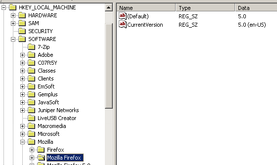

要操作 registry 前，要先搞清楚 key、value、name、data 之間的關係才行。
基本上 registry 就是由 registry key/subkey 組成的樹狀結構，每一個 registry key 下都有一或多個 registry value，也就是 name/data pair（注意跟傳統 key/value pair 的說法不同）。
更正確地來說，每一個 registry key 下都有一個 default/unnamed value 與零或多個 named value；所謂 unnamed value 指的就是 name 為空字串的 registry value，每個 registry key 底下都有一個 default/unnamed value，而且型態固定是 REG_SZ。
